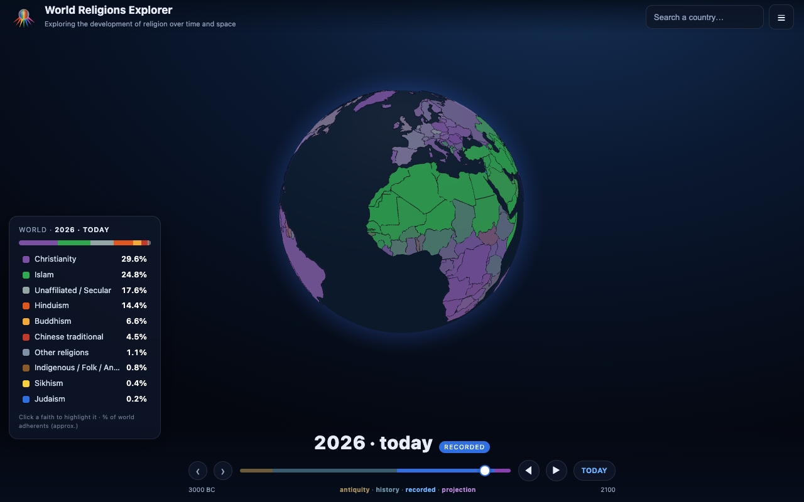
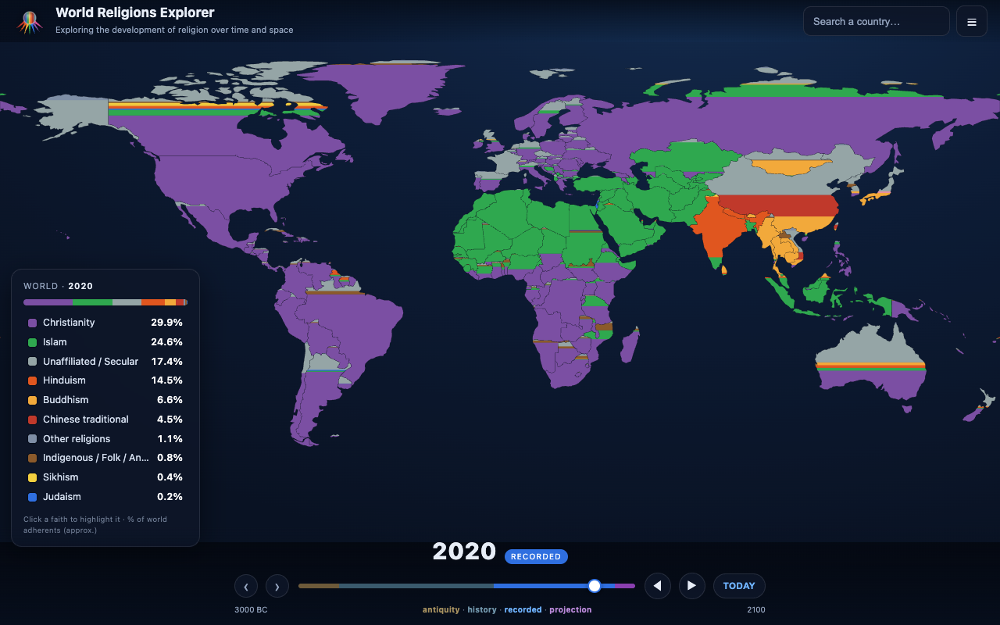
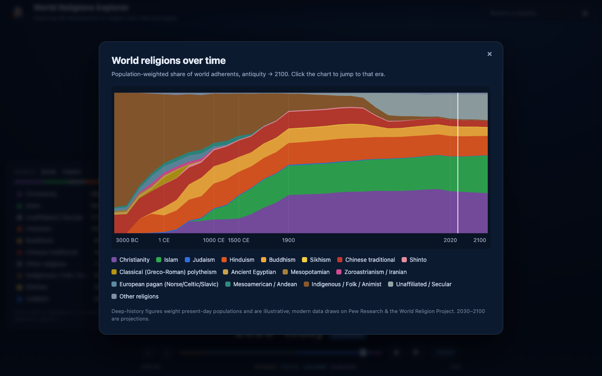

Chrome Extension
Watch the religious landscape of the world change from antiquity to a projection for 2100, on a beautiful interactive 3D globe or flat map. 173 countries, each coloured by its faiths, with a deep time slider you can drag — or press play.
Private by default · collects no data · makes no network requests · works fully offline

Spin a 3D globe coloured by each country's majority faith, or switch to a flat map that fills every country proportionally by religion.
A deep time slider from 3000 BC to a projection for 2100 — drag it, or press play to watch faiths rise, spread and recede.
Hover or click any of 173 countries for its complete religious breakdown and a trend chart across history.
A global stacked-area chart of every religion's share of the world's population, from antiquity to 2100.
Click a faith to light up where it's strongest, and search any country to jump straight to it.
Copy a link to an exact moment — a faith, a country, a year — to share what you've found.


Modern figures (1900–2100) draw on Pew Research and the World Religion Project; deep-history figures are best-effort scholarly estimates. Populations count de facto residents (including expatriates), as Pew does. Figures are approximate and illustrative, modern national borders are shown at every era as a visualisation device, and figures beyond 2020 are projections — not measurements. Country outlines: Natural Earth (public domain). Globe rendering: globe.gl.